import sklearn
from sklearn import datasets
import numpy as np
import pandas as pd
import seaborn as sns
import matplotlib.pyplot as pltLoad and check data
#RELOAD FILE AND PRETEND THAT IS OUR STARTING POINT
df=pd.read_csv('../eda/cars-data.csv')
print(df.shape)
df.head()(719, 13)| Unnamed: 0 | city_mpg | class | combination_mpg | cylinders | displacement | drive | fuel_type | highway_mpg | make | model | transmission | year | |
|---|---|---|---|---|---|---|---|---|---|---|---|---|---|
| 0 | 0 | 18 | midsize car | 21 | 4.0 | 2.2 | fwd | gas | 26 | toyota | Camry | a | 1993 |
| 1 | 1 | 19 | midsize car | 22 | 4.0 | 2.2 | fwd | gas | 27 | toyota | Camry | m | 1993 |
| 2 | 2 | 16 | midsize car | 19 | 6.0 | 3.0 | fwd | gas | 22 | toyota | Camry | a | 1993 |
| 3 | 3 | 16 | midsize car | 18 | 6.0 | 3.0 | fwd | gas | 22 | toyota | Camry | m | 1993 |
| 4 | 4 | 18 | midsize-large station wagon | 21 | 4.0 | 2.2 | fwd | gas | 26 | toyota | Camry | a | 1993 |
nan_count = df.isna().sum()
print(nan_count)Unnamed: 0 0
city_mpg 0
class 0
combination_mpg 0
cylinders 124
displacement 124
drive 8
fuel_type 0
highway_mpg 0
make 0
model 0
transmission 0
year 0
dtype: int64df.info()<class 'pandas.core.frame.DataFrame'>
RangeIndex: 719 entries, 0 to 718
Data columns (total 13 columns):
# Column Non-Null Count Dtype
--- ------ -------------- -----
0 Unnamed: 0 719 non-null int64
1 city_mpg 719 non-null int64
2 class 719 non-null object
3 combination_mpg 719 non-null int64
4 cylinders 595 non-null float64
5 displacement 595 non-null float64
6 drive 711 non-null object
7 fuel_type 719 non-null object
8 highway_mpg 719 non-null int64
9 make 719 non-null object
10 model 719 non-null object
11 transmission 719 non-null object
12 year 719 non-null int64
dtypes: float64(2), int64(5), object(6)
memory usage: 73.2+ KB# Convert all 'object' type columns to 'string'
for col in df.select_dtypes(include=['object']).columns:
df[col] = df[col].astype('string')
# Verify the changes
df.info()<class 'pandas.core.frame.DataFrame'>
RangeIndex: 719 entries, 0 to 718
Data columns (total 13 columns):
# Column Non-Null Count Dtype
--- ------ -------------- -----
0 Unnamed: 0 719 non-null int64
1 city_mpg 719 non-null int64
2 class 719 non-null string
3 combination_mpg 719 non-null int64
4 cylinders 595 non-null float64
5 displacement 595 non-null float64
6 drive 711 non-null string
7 fuel_type 719 non-null string
8 highway_mpg 719 non-null int64
9 make 719 non-null string
10 model 719 non-null string
11 transmission 719 non-null string
12 year 719 non-null int64
dtypes: float64(2), int64(5), string(6)
memory usage: 73.2 KB# get y
y = df['fuel_type'].unique().tolist()
y['gas', 'electricity', 'diesel']# Dropping non-numerical and unnecessary columns
df = df.drop(columns=['Unnamed: 0'])# Replace continuous missing values with mean of the column. check for Nan values again.
cols = ['displacement', 'cylinders']
df[cols] = df[cols].fillna(df[cols].mean())
nan_count = df.isna().sum()
print(nan_count)city_mpg 0
class 0
combination_mpg 0
cylinders 0
displacement 0
drive 8
fuel_type 0
highway_mpg 0
make 0
model 0
transmission 0
year 0
dtype: int64# Replace categorical missing values with mode of the column. check for Nan values again.
df['drive'] = df['drive'].fillna(df['drive'].mode().iloc[0])
nan_count = df.isna().sum()
print(nan_count)city_mpg 0
class 0
combination_mpg 0
cylinders 0
displacement 0
drive 0
fuel_type 0
highway_mpg 0
make 0
model 0
transmission 0
year 0
dtype: int64# Using a for loop to replace categorical values with cat codes
cat_cols = ['class', 'drive', 'fuel_type', 'make', 'model', 'transmission']
for col in cat_cols:
df[col] = df[col].astype('category')
df[col] = df[col].cat.codes
# Display the altered DataFrame
df.head()| city_mpg | class | combination_mpg | cylinders | displacement | drive | fuel_type | highway_mpg | make | model | transmission | year | |
|---|---|---|---|---|---|---|---|---|---|---|---|---|
| 0 | 18 | 2 | 21 | 4.0 | 2.2 | 2 | 2 | 26 | 24 | 33 | 0 | 1993 |
| 1 | 19 | 2 | 22 | 4.0 | 2.2 | 2 | 2 | 27 | 24 | 33 | 1 | 1993 |
| 2 | 16 | 2 | 19 | 6.0 | 3.0 | 2 | 2 | 22 | 24 | 33 | 0 | 1993 |
| 3 | 16 | 2 | 18 | 6.0 | 3.0 | 2 | 2 | 22 | 24 | 33 | 1 | 1993 |
| 4 | 18 | 4 | 21 | 4.0 | 2.2 | 2 | 2 | 26 | 24 | 33 | 0 | 1993 |
df.to_csv('cardf_cleaned.csv')# Split the dataset in X and y. since this is unsupervised learning, we will not use the y labels. you can choose to normalize the X data by using the StandardScaler function.
x_cols = ['city_mpg', 'class', 'combination_mpg', 'cylinders', 'displacement', 'drive', 'highway_mpg', 'make', 'model', 'transmission', 'year' ]
y_cols = ['fuel_type']
X = df[x_cols] #'fuel_type' is the column we want to predict.
y = df[y_cols]
X = df[x_cols] # X data
y = df[y_cols].values.ravel() # Flatten y to a 1D array
# X.shape, y.shape, yprint(X.shape)
print(y.shape)(719, 11)
(719,)print(pd.DataFrame(X.iloc[0:11, :])) city_mpg class combination_mpg cylinders displacement drive \
0 18 2 21 4.0 2.2 2
1 19 2 22 4.0 2.2 2
2 16 2 19 6.0 3.0 2
3 16 2 18 6.0 3.0 2
4 18 4 21 4.0 2.2 2
5 23 0 24 4.0 1.6 2
6 23 0 26 4.0 1.6 2
7 23 0 25 4.0 1.8 2
8 23 0 26 4.0 1.8 2
9 23 9 25 4.0 1.8 2
10 21 10 23 4.0 2.0 2
highway_mpg make model transmission year
0 26 24 33 0 1993
1 27 24 33 1 1993
2 22 24 33 0 1993
3 22 24 33 1 1993
4 26 24 33 0 1993
5 26 24 37 0 1993
6 31 24 37 1 1993
7 30 24 37 0 1993
8 30 24 37 1 1993
9 30 24 37 0 1993
10 26 24 104 0 1996 print(pd.DataFrame(y[0:10])) 0
0 2
1 2
2 2
3 2
4 2
5 2
6 2
7 2
8 2
9 2Normalization
#NORMALIZE
X=0.1+(X-np.min(X,axis=0))/(np.max(X,axis=0)-np.min(X,axis=0))
y=0.1+(y-np.min(y,axis=0))/(np.max(y,axis=0)-np.min(y,axis=0))Numerical EDA
# CONVERT TO THE DATA FRAMES FOR PLOTTING
df=pd.DataFrame(np.hstack((X,y.reshape(y.shape[0],1))))print(df.describe()) 0 1 2 3 4 5 \
count 719.000000 719.000000 719.000000 719.000000 719.000000 719.000000
mean 0.277670 0.608948 0.292757 0.407803 0.383403 0.705007
std 0.232149 0.348874 0.240575 0.182344 0.203106 0.270377
min 0.100000 0.100000 0.100000 0.100000 0.100000 0.100000
25% 0.149645 0.233333 0.164000 0.242857 0.225000 0.433333
50% 0.178014 0.700000 0.188000 0.407803 0.383403 0.766667
75% 0.227660 0.900000 0.252000 0.528571 0.454167 0.766667
max 1.100000 1.100000 1.100000 1.100000 1.100000 1.100000
6 7 8 9 10 11
count 719.000000 719.000000 719.000000 719.000000 719.000000 719.000000
mean 0.328195 0.605296 0.590969 0.319750 0.680364 1.010292
std 0.242278 0.323107 0.290214 0.414365 0.290916 0.200847
min 0.100000 0.100000 0.100000 0.100000 0.100000 0.100000
25% 0.190090 0.292308 0.340000 0.100000 0.382051 1.100000
50% 0.226126 0.638462 0.580000 0.100000 0.689744 1.100000
75% 0.298198 0.946154 0.843333 0.100000 0.971795 1.100000
max 1.100000 1.100000 1.100000 1.100000 1.100000 1.100000 print("X CORRELATION:")
corr = df.corr(); print(corr) #COMPUTE CORRELATION OF FEATER MATRIXX CORRELATION:
0 1 2 3 4 5 6 \
0 1.000000 -0.213484 0.998454 -0.121316 -0.128895 -0.108960 0.991697
1 -0.213484 1.000000 -0.222664 0.141542 0.169821 -0.029415 -0.236399
2 0.998454 -0.222664 1.000000 -0.132139 -0.141069 -0.108910 0.997063
3 -0.121316 0.141542 -0.132139 1.000000 0.921746 0.023977 -0.144294
4 -0.128895 0.169821 -0.141069 0.921746 1.000000 0.037908 -0.155732
5 -0.108960 -0.029415 -0.108910 0.023977 0.037908 1.000000 -0.105232
6 0.991697 -0.236399 0.997063 -0.144294 -0.155732 -0.105232 1.000000
7 0.168306 -0.146960 0.172437 -0.095927 -0.030382 -0.016696 0.175792
8 0.115270 0.058427 0.118600 -0.035188 -0.099265 -0.095618 0.119540
9 -0.240810 0.118692 -0.238849 -0.101199 -0.119059 0.187411 -0.233231
10 0.561037 -0.075022 0.566843 -0.114270 -0.071015 -0.284616 0.569990
11 -0.835461 0.144975 -0.841992 0.020498 0.024196 0.171570 -0.846466
7 8 9 10 11
0 0.168306 0.115270 -0.240810 0.561037 -0.835461
1 -0.146960 0.058427 0.118692 -0.075022 0.144975
2 0.172437 0.118600 -0.238849 0.566843 -0.841992
3 -0.095927 -0.035188 -0.101199 -0.114270 0.020498
4 -0.030382 -0.099265 -0.119059 -0.071015 0.024196
5 -0.016696 -0.095618 0.187411 -0.284616 0.171570
6 0.175792 0.119540 -0.233231 0.569990 -0.846466
7 1.000000 0.018262 -0.047114 0.097615 -0.144965
8 0.018262 1.000000 -0.043622 0.113015 -0.096114
9 -0.047114 -0.043622 1.000000 -0.365931 0.203730
10 0.097615 0.113015 -0.365931 1.000000 -0.441338
11 -0.144965 -0.096114 0.203730 -0.441338 1.000000 Correlation matrix heatmap
# INSERT CODE TO SHOW A HEAT MAP FOR THE X FEATURES
sns.set_theme(style="white")
f, ax = plt.subplots(figsize=(11, 9)) # Set up the matplotlib figure
cmap = sns.diverging_palette(230, 20, as_cmap=True) # Generate a custom diverging colormap
# Draw the heatmap with the mask and correct aspect ratio
sns.heatmap(corr, cmap=cmap, vmin=-1, vmax=1, center=0,
square=True, linewidths=.5, cbar_kws={"shrink": .5})
plt.show();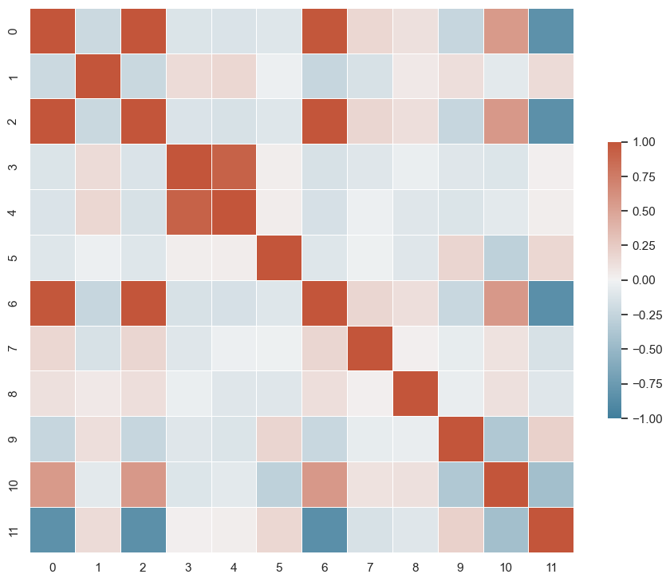
Multi-variable pair-plot
# # # # INSERT CODE TO GENERATE A PAIR-PLOT
sns.pairplot(df)
plt.show()/Users/isfarbaset/anaconda3/lib/python3.11/site-packages/seaborn/axisgrid.py:118: UserWarning: The figure layout has changed to tight
self._figure.tight_layout(*args, **kwargs)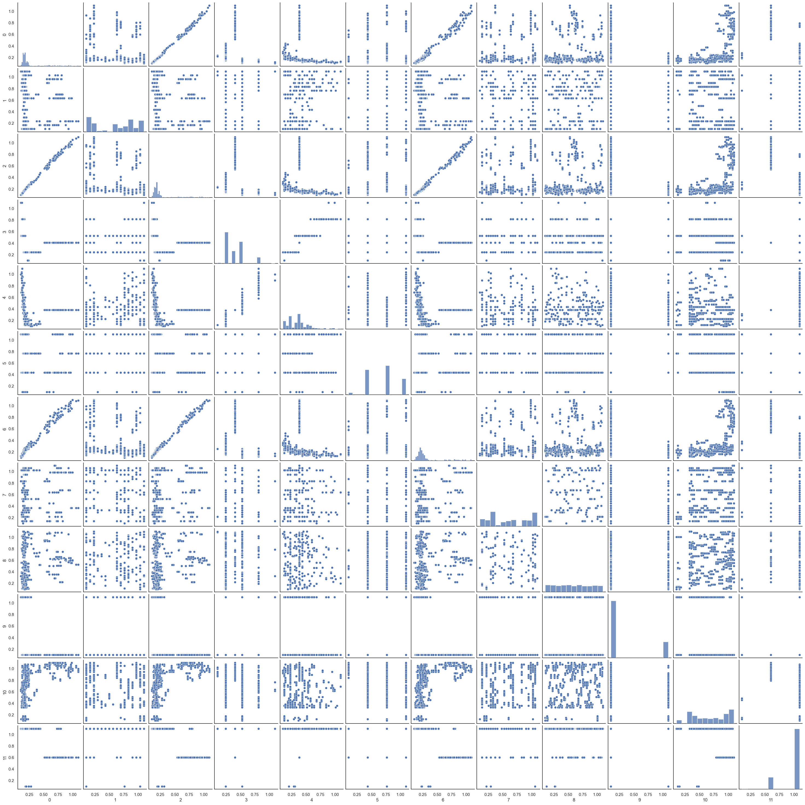
Partition data
#DROP FIRST TWO FEATURES
X = X.iloc[:, 2:]
from sklearn.model_selection import train_test_split
test_ratio=0.2
x_train, x_test, y_train, y_test = train_test_split(X, y, test_size=test_ratio, random_state=0)
y_train=y_train.flatten()
y_test=y_test.flatten()
print("x_train.shape :",x_train.shape)
print("y_train.shape :",y_train.shape)
print("X_test.shape :",x_test.shape)
print("y_test.shape :",y_test.shape)x_train.shape : (575, 9)
y_train.shape : (575,)
X_test.shape : (144, 9)
y_test.shape : (144,)Hyper-Parameter tuning (max_depth)
- Goal: Find the optimal hyper parameter
from sklearn.metrics import mean_absolute_percentage_error
from sklearn.metrics import mean_absolute_error
from sklearn.tree import DecisionTreeRegressor
# HYPER PARAMETER SEARCH FOR OPTIMAL NUMBER OF NEIGHBORS
hyper_param=[]
train_error=[]
test_error=[]
# LOOP OVER HYPER-PARAM
for i in range(1,40):
# INITIALIZE MODEL
model = DecisionTreeRegressor(max_depth=i)
# TRAIN MODEL
model.fit(x_train,y_train)
# OUTPUT PREDICTIONS FOR TRAINING AND TEST SET
yp_train = model.predict(x_train)
yp_test = model.predict(x_test)
# shift=1+np.min(y_train) #add shift to remove division by zero
err1=mean_absolute_error(y_train, yp_train)
err2=mean_absolute_error(y_test, yp_test)
# err1=100.0*np.mean(np.absolute((yp_train-y_train)/y_train))
# err2=100.0*np.mean(np.absolute((yp_test-y_test)/y_test))
hyper_param.append(i)
train_error.append(err1)
test_error.append(err2)
if(i==1 or i%10==0):
print("hyperparam =",i)
print(" train error:",err1)
print(" test error:" ,err2)hyperparam = 1
train error: 0.0186419929742148
test error: 0.02268100465323882
hyperparam = 10
train error: 7.117663946155022e-15
test error: 0.020833333333340878
hyperparam = 20
train error: 7.117663946155022e-15
test error: 0.020833333333340878
hyperparam = 30
train error: 7.117663946155022e-15
test error: 0.013888888888896438Convergence plot
plt.plot(hyper_param,train_error ,linewidth=2, color='k')
plt.plot(hyper_param,test_error ,linewidth=2, color='b')
plt.xlabel("Depth of tree (max depth)")
plt.ylabel("Training (black) and test (blue) MAE (error)")
i=1
print(hyper_param[i],train_error[i],test_error[i])2 0.014922360248454326 0.016865079365086914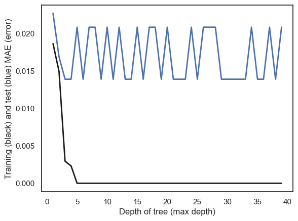
Hyper-Parameter tuning (min_samples_splitint)
- Goal: Find the optimal hyper parameter
# HYPER PARAMETER SEARCH FOR OPTIMAL NUMBER OF NEIGHBORS
hyper_param=[]
train_error=[]
test_error=[]
# LOOP OVER HYPER-PARAM
for i in range(2,100):
# INITIALIZE MODEL
model = DecisionTreeRegressor(min_samples_split=i)
# TRAIN MODEL
model.fit(x_train,y_train)
# OUTPUT PREDICTIONS FOR TRAINING AND TEST SET
yp_train = model.predict(x_train)
yp_test = model.predict(x_test)
# shift=1+np.min(y_train) #add shift to remove division by zero
err1=mean_absolute_error(y_train, yp_train)
err2=mean_absolute_error(y_test, yp_test)
# err1=100.0*np.mean(np.absolute((yp_train-y_train)/y_train))
# err2=100.0*np.mean(np.absolute((yp_test-y_test)/y_test))
hyper_param.append(i)
train_error.append(err1)
test_error.append(err2)
if(i%10==0):
print("hyperparam =",i)
print(" train error:",err1)
print(" test error:" ,err2)hyperparam = 10
train error: 0.002318840579717263
test error: 0.013888888888896438
hyperparam = 20
train error: 0.005978260869572333
test error: 0.013888888888896438
hyperparam = 30
train error: 0.014922360248454315
test error: 0.016865079365086907
hyperparam = 40
train error: 0.014922360248454315
test error: 0.016865079365086907
hyperparam = 50
train error: 0.014922360248454315
test error: 0.016865079365086907
hyperparam = 60
train error: 0.014922360248454322
test error: 0.016865079365086914
hyperparam = 70
train error: 0.014922360248454315
test error: 0.016865079365086907
hyperparam = 80
train error: 0.014922360248454322
test error: 0.016865079365086914
hyperparam = 90
train error: 0.014922360248454315
test error: 0.016865079365086907Convergence plot
plt.plot(hyper_param,train_error ,linewidth=2, color='k')
plt.plot(hyper_param,test_error ,linewidth=2, color='b')
plt.xlabel("Minimum number of points in split (min_samples_split)")
plt.ylabel("Training (black) and test (blue) MAE (error)")Text(0, 0.5, 'Training (black) and test (blue) MAE (error)')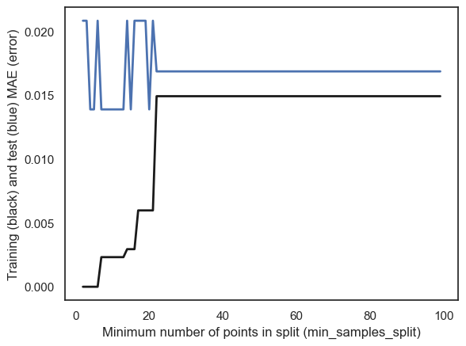
Re-train with optimal parameters
# INITIALIZE MODEL
model = DecisionTreeRegressor(max_depth=1)
model.fit(x_train,y_train) # TRAIN MODEL
# OUTPUT PREDICTIONS FOR TRAINING AND TEST SET
yp_train = model.predict(x_train)
yp_test = model.predict(x_test)
err1=mean_absolute_error(y_train, yp_train)
err2=mean_absolute_error(y_test, yp_test)
print(" train error:",err1)
print(" test error:" ,err2)Parity Plot
Plotting y_pred vs y_data lets you see how good the fit is
The closer to the line y=x the better the fit (ypred=ydata –> prefect fit)
plt.plot(y_train,yp_train ,"o", color='k')
plt.plot(y_test,yp_test ,"o", color='b')
plt.plot(y_train,y_train ,"-", color='r')
plt.xlabel("y_data")
plt.ylabel("y_pred (blue=test)(black=Train)")Text(0, 0.5, 'y_pred (blue=test)(black=Train)')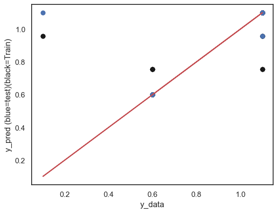
from sklearn import tree
def plot_tree(model):
fig = plt.figure(figsize=(25,20))
_ = tree.plot_tree(model,
filled=True)
plt.show()plot_tree(model)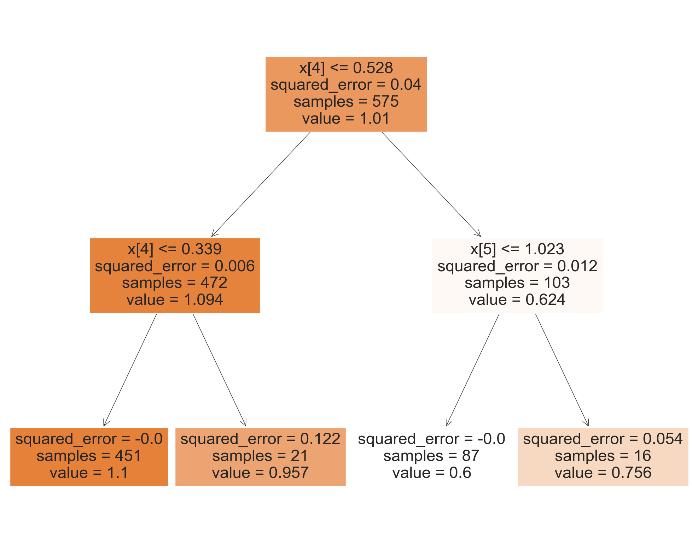
for i in range(0, x_train.shape[1]):
print(i)
plt.plot(x_train.iloc[:, i], y_train, "o", color='b')
plt.plot(x_train.iloc[:, i], yp_train, "o", color='r')
plt.show()0
1
2
3
4
5
6
7
8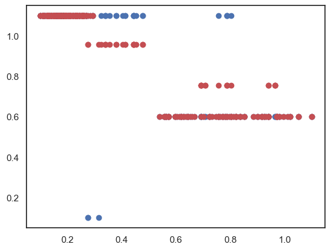
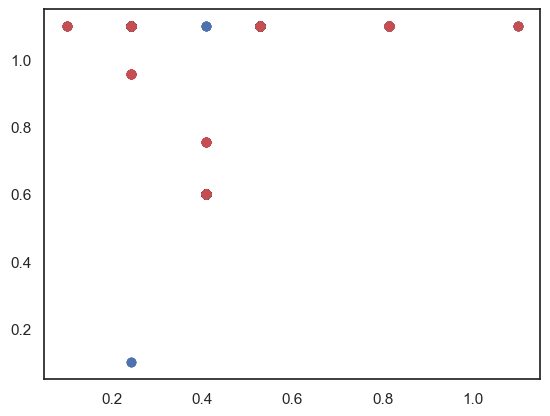
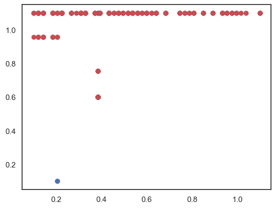
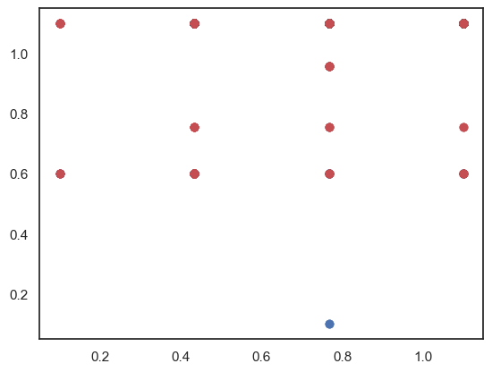
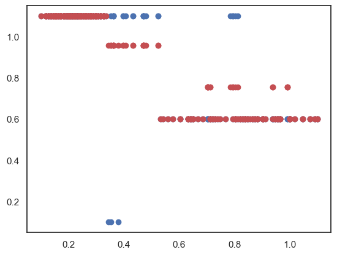
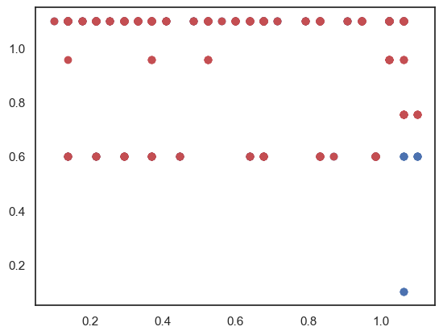
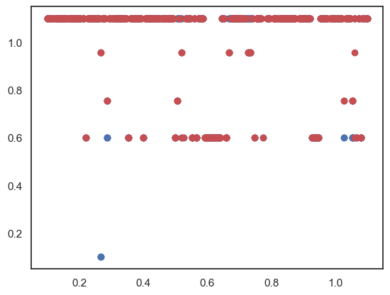
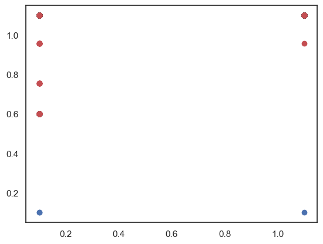
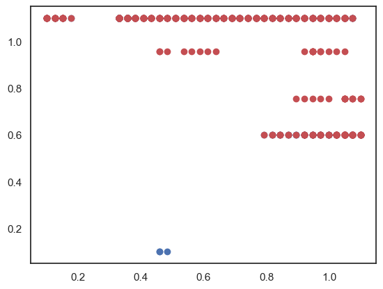